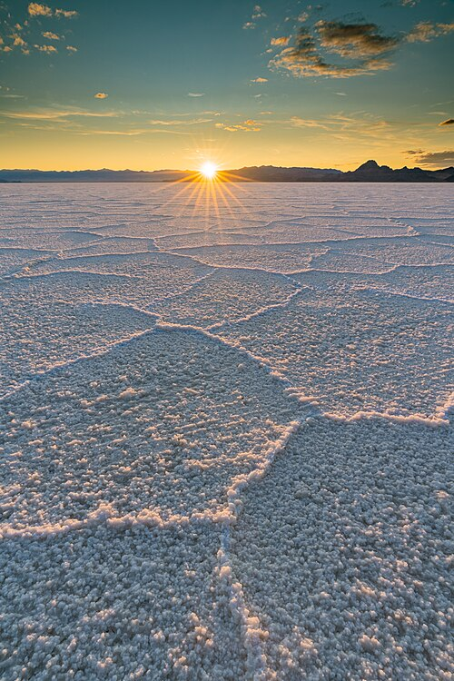
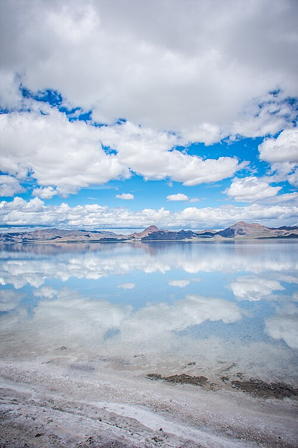

The Bonneville Slat Flats are an expance of land (about 46 square feet) packed with salt. The salt flats were created by the evaporation of Lake Bonneville. When it rains the water on the salt flats create a mirror-like reflexion. The salt flats are located in Tooele County.

